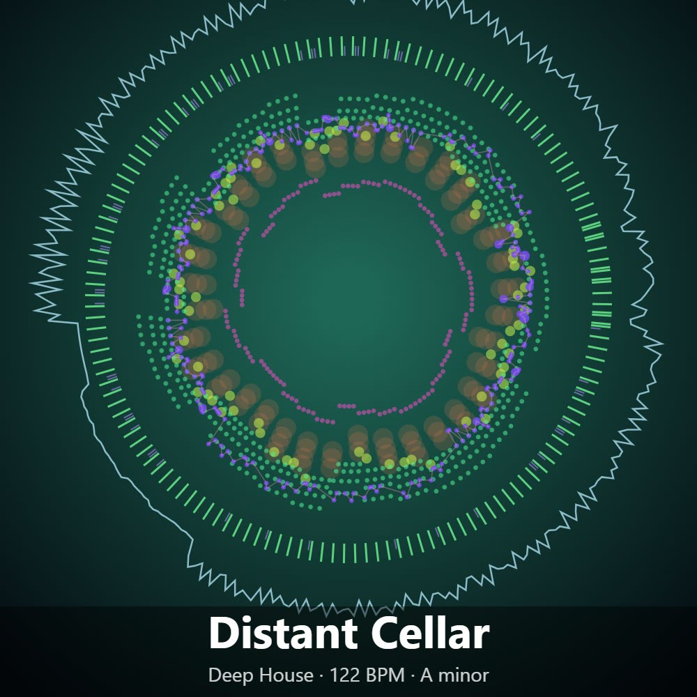

Distant Cellar

Four-on-the-floor drums, a sawtooth bass and a square lead over sawtooth pads: a dark deep house song at 122 BPM in A minor, 1:11 long across 7 sections.
Made with Randis UDS, a free desktop app that builds the tools you describe.